▲ 앞유리 룸미러 옆에 설치된 블랙박스 두 대. 채널 수와 설치 방식에 따라 기록 범위가 달라진다 ⓒ Fernost / Wikimedia Commons (Public domain)
"화질 좋은 걸로 달면 되죠?" 블랙박스를 살 때 가장 먼저 비교하는 것은 대개 해상도와 채널 수다. 그런데 사고 때 실제로 문제가 되는 것은 번호판이 읽히는가, 주차 중에 켜져 있었는가, SD카드가 정상 기록 중이었는가다. 이 글은 이미 다룬 영상 제출 방법, SD카드 수명 관리, 상시녹화 방전 관리와 달리 "사기 전에 무엇을 확인하고, 내 상황에는 어떤 조합이 맞는가"에 집중한다.
제조사 공식 자료(현대자동차 설명서·보도, 삼성전자 메모리 사양, 소니 센서 유통사 사양)와 한국소비자원 시험 보도, 보험사 안내만 근거로 썼다. 번호판 식별 거리와 방전 시간은 카프리즘이 가정을 밝히고 계산한 값이며, 확인하지 못한 항목은 "확인하지 못함"으로 적었다. 특정 제품 추천이나 가격 단정은 하지 않는다.
1. 1채널·2채널·3채널 — 무엇이 더 찍히고 무엇이 달라지나
채널은 카메라 개수다. 전방 1대면 1채널, 전방+후방이면 2채널, 여기에 실내 또는 측면이 더해지면 3채널 이상이다. 아래 표는 "어떤 사고 장면을 증거로 남길 수 있나" 관점으로 정리한 카프리즘 판정이다.
| 구성 | 찍히는 범위 | 증거로 유리한 장면 | 한계·주의 |
|---|---|---|---|
| 1채널(전방) | 차량 앞 | 신호위반·끼어들기·정면 충돌 등 주행 중 전방 상황 | 후방 추돌, 주차 중 뒤쪽 접촉은 기록되지 않음 |
| 2채널(전방+후방) | 앞·뒤 | 후방 추돌, 후진 사고, 주차 중 뒤쪽 접촉 | 후방 카메라 해상도가 전방보다 낮은 제품이 흔함(제품별 확인 필요) |
| 3채널(실내 추가) | 앞·뒤·실내 | 승객과의 분쟁, 업무용 차량 운행 기록(일반적으로 업무용 차량에서 많이 쓰이는 것으로 알려져 있음) | 실내 촬영·음성 녹음의 고지·동의 기준은 이번 조사에서 확인하지 못함 |
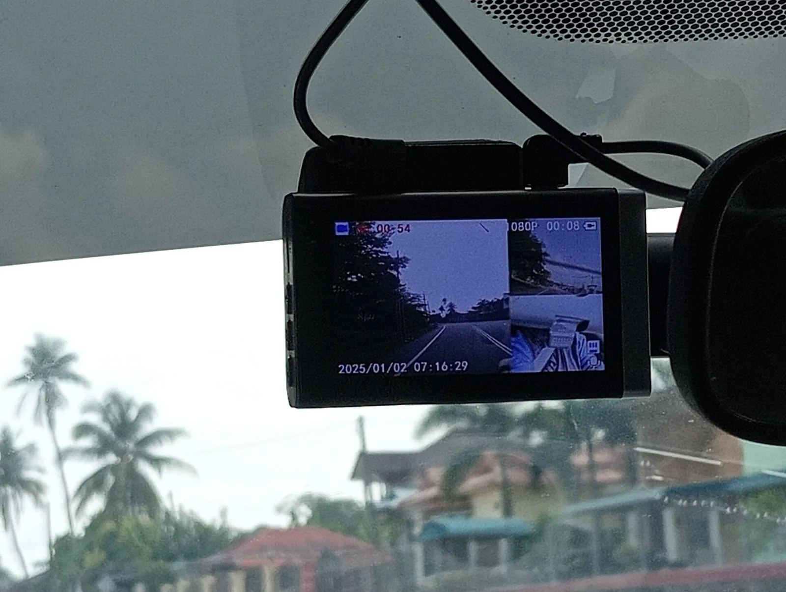
▲ 분할 화면으로 두 채널 영상을 함께 보여 주는 블랙박스 액정. 채널이 늘면 영상 파일도 그만큼 늘어 메모리 소모가 커진다 ⓒ Danielrayyan09 / Wikimedia Commons (CC BY 4.0)
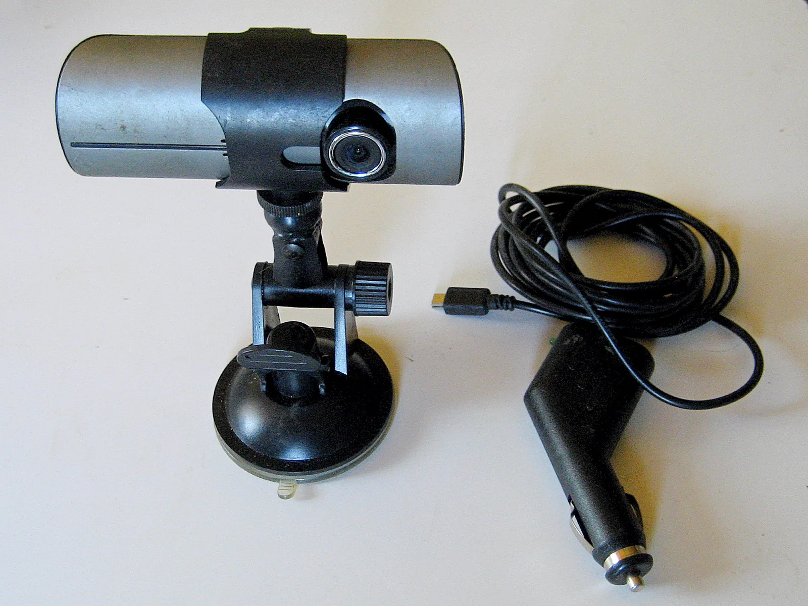
▲ 렌즈 쪽에서 본 거치대 일체형 블랙박스와 시거잭 케이블(촬영 제품은 국내 판매품과 무관). 앞면 렌즈 외에 뒷면에도 카메라가 달린 구조의 제품이 있어 채널 수 표기를 확인해야 한다 ⓒ Schekinov Alexey Victorovich / Wikimedia Commons (CC BY-SA 4.0)
📍 후방 카메라가 필요한 이유
한국 도로에서 흔한 후방 추돌은 전방 카메라만으로는 기록할 수 없다. 현대자동차의 빌트인 캠도 전·후방 두 대로 주행·주차 중 앞뒤를 녹화하도록 구성돼 있다(현대차 사용설명서). 반대로 2채널은 영상이 두 배이므로 같은 SD카드에서 기록 가능 시간이 줄어든다는 점도 함께 봐야 한다.
2. 화질 FHD·QHD·UHD — 번호판은 몇 픽셀로 찍히나
해상도는 가로×세로 픽셀 수다. FHD 1920×1080은 약 207만 화소, QHD 2560×1440은 약 369만 화소, UHD(4K) 3840×2160은 약 829만 화소다(단순 곱셈). 화소가 많다고 번호판이 반드시 읽히는 것은 아니지만, 같은 거리에서 번호판이 차지하는 픽셀 수는 늘어난다.
📍 계산 가정
· 번호판 가로 길이 520mm 가정(일반 승용 번호판 규격 기준, 이번 조사에서 규격 문서는 직접 확인하지 못함)
· 렌즈 수평 화각 120° 가정(2010년 한국소비자원 1채널 14개 제품 시험에서 156°·148° 표기 제품이 실제로 약 120°로 측정된 보도 사례 참고)
· 식: 번호판 픽셀 폭 = 가로 픽셀 × 0.52m ÷ (2 × 거리 × tan(60°)). 렌즈 왜곡·압축·움직임 번짐은 반영하지 않음 → 실제는 더 낮을 수 있음(추정)
| 해상도 | 총 화소 | 3m | 5m | 10m | FHD 대비 |
|---|---|---|---|---|---|
| FHD 1920×1080 | 약 207만 | 약 96px | 약 58px | 약 29px | 1.00배 |
| QHD 2560×1440 | 약 369만 | 약 128px | 약 77px | 약 38px | 1.33배(화소는 1.78배) |
| UHD 3840×2160 | 약 829만 | 약 192px | 약 115px | 약 58px | 2.00배(화소는 4.00배) |
표에서 보듯 가로 픽셀 기준으로는 FHD→QHD가 1.33배, FHD→UHD가 2배다. 화소는 4배가 되어도 번호판 폭은 2배라는 뜻이다. 몇 픽셀부터 번호판이 읽히는지에 대한 공식 기준은 확인하지 못했다. 한국소비자원은 2013년 11월 31개 제품 시험 보도에서 "막연히 해상도가 높은 Full HD급 고가의 제품을 선호하기 보다 번호판 식별성 등 영상품질과 동영상 저장성능 등이 우수한 제품을 선택하는 것이 바람직하다"고 조언했다(뉴스토마토). 그보다 앞선 2010년 7월 1채널 14개 제품 시험에서는 4m·3m·2m 거리별 번호판 식별성 평가 결과 3~4m 거리에서 식별이 거의 불가능한 제품도 있었다고 밝혔다(뉴스와이어). 두 시험 모두 지금과 제품 세대가 다르므로 당시 수치를 현재 제품에 그대로 적용할 수는 없다. 즉 해상도 숫자보다 실제 영상 품질이 우선이다.
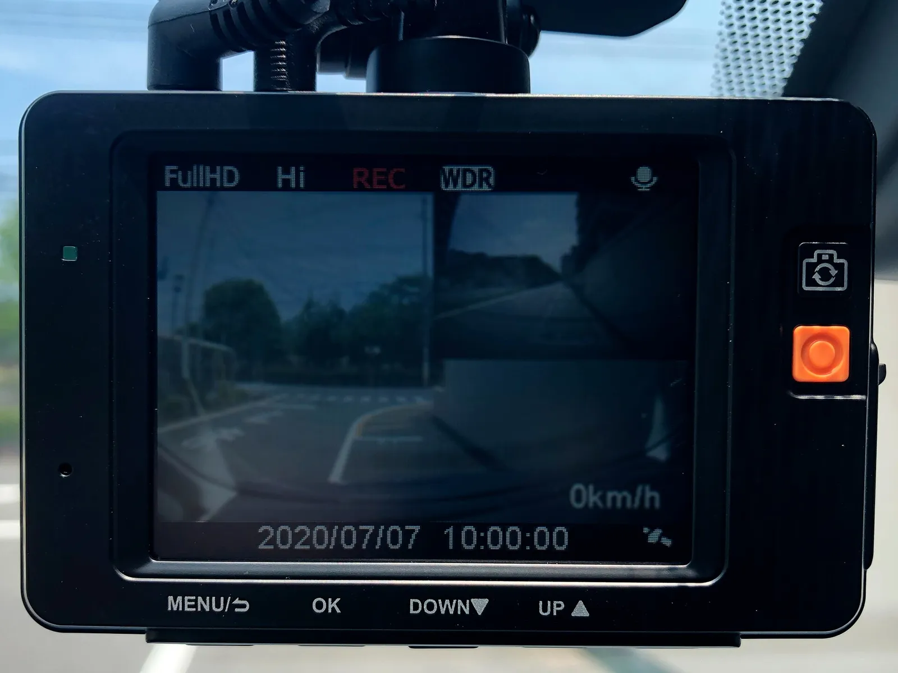
▲ 액정에 FullHD 표시가 뜬 블랙박스. 표기 해상도와 실제 번호판 식별력은 렌즈·센서·압축에 따라 달라진다 ⓒ Project Kei / Wikimedia Commons (CC BY-SA 4.0)
✅ 화질 체크 포인트
· 카탈로그 해상도 대신 실제 주행 샘플 영상(주간·야간·역광)을 확인할 것
· 시야각은 넓을수록 번호판이 작아진다 — 2010년 소비자원 시험에서 시야각이 최소 52°~최대 131°로 2배 이상 차이
· 후방 카메라 해상도는 전방과 다른 제품이 많아 후방 사양을 따로 확인
3. 야간 화질 — 센서 이름만 믿으면 안 되는 이유
야간·터널·지하주차장 영상은 센서 성능에 크게 좌우된다. 많은 제품이 소니 STARVIS 계열 센서를 내세운다. 소니 STARVIS 2 계열인 IMX675는 소니 반도체 발표 자료 기준 유효 화소 2608×1964(약 5.12MP), 대각 6.53mm(1/2.8형), 화소 크기 2.0µm×2.0µm, 적층 구조이며 보안 카메라용으로 소개된다(같은 사양을 유통사 FRAMOS도 게재). 다만 이는 보안 카메라용 센서의 사양이고, 특정 블랙박스 제품이 이 센서를 쓰는지는 제품마다 다르다. 다만 센서가 같아도 렌즈 밝기(F값)·영상 처리·HDR 설정에 따라 결과가 달라진다. 현대자동차는 빌트인 캠 2에서 조리개를 F2.0에서 F1.6으로 개선해 저조도 성능을 높였다고 밝혔다.
| 항목 | 무엇을 보나 | 확인 방법 |
|---|---|---|
| 센서 | STARVIS 등 저조도용 센서 여부, 센서 크기 | 제조사 공식 사양 페이지(센서 모델명 기재 여부) |
| 렌즈 F값 | 숫자가 작을수록 밝음(예: F1.6) | 공식 사양표. 미기재 제품은 확인하지 못함으로 처리 |
| HDR/WDR | 터널 출입·역광에서 밝기 보정 | 실제 샘플 영상 |
| 최저 조도 표기 | 2010년 소비자원 시험에서 0.5~3LUX 표기 제품 6개가 실제로는 사물 식별이 어려웠다고 보도 | 표기만 믿지 말고 야간 샘플 확인 |
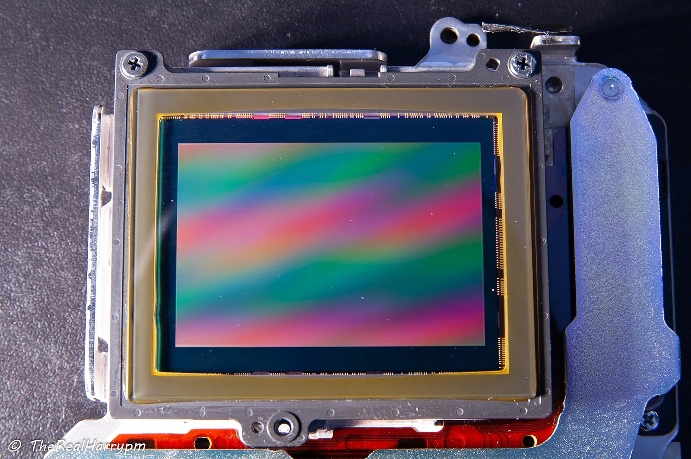
▲ 디지털 카메라용 CMOS 이미지 센서 모듈 예시(블랙박스용 센서가 아님). 센서가 같아도 렌즈 F값과 영상 처리에 따라 야간 결과가 갈린다 ⓒ Harry munday / Wikimedia Commons (CC BY-SA 4.0)
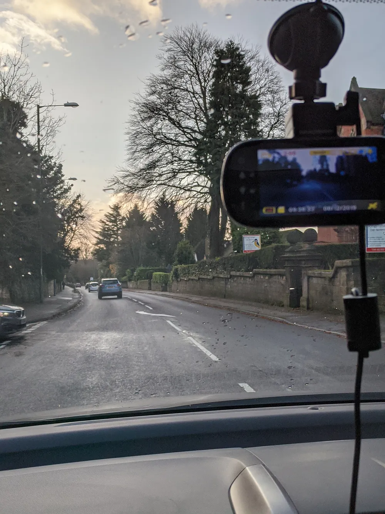
▲ 앞유리에 거치된 블랙박스의 전방 시야. 저조도·역광에서는 같은 해상도라도 결과가 크게 갈린다 ⓒ Ed6767 / Wikimedia Commons (CC BY-SA 4.0)
4. 주차녹화 방식과 방전 위험 — 상시·충격감지·타임랩스
주차 중 녹화는 방식에 따라 전력 소모와 "놓치는 장면"이 달라진다. 현대자동차 빌트인 캠 설명서는 주행·주차 녹화를 이벤트(충격 감지), 상시, 모션 감지, 타임랩스로 나눠 설명하고, 주차 중 상시·타임랩스 영상에는 음성 녹음이 지원되지 않는다고 안내한다. 이 구분은 후장착 블랙박스에도 대체로 통용되는 기준이다.
| 방식 | 동작 | 장점 | 단점 |
|---|---|---|---|
| 상시 녹화 | 주차 중 계속 촬영 | 충격 전후 상황이 끊김 없이 남음 | 전력·메모리 소모가 가장 큼 |
| 충격 감지(이벤트) | 충격 때만 저장, 평시 대기 | 전력 절약, 저장 효율 | 충격 직전 영상 길이는 제품 설정에 좌우 |
| 모션 감지 | 움직임이 있을 때 저장 | 지나가는 사람·차량 기록 | 오감지가 잦으면 메모리·전력 소모 증가 |
| 타임랩스 | 일정 간격으로 저장해 압축 | 긴 시간을 적은 용량으로 기록 | 초당 프레임이 적어 순간 장면 식별 한계 |
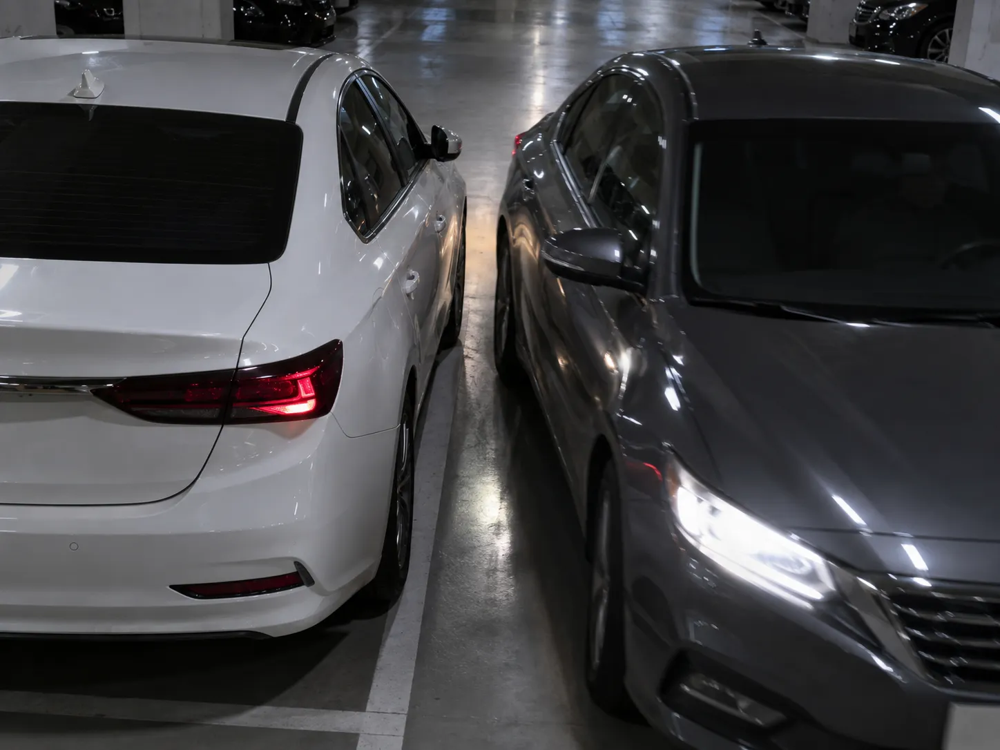
▲ 주차장 접촉은 주차 중 녹화가 켜져 있어야 증거가 남는다(설명용 AI 생성 예시 이미지) ⓒ CarPrism (AI 생성 이미지)
방전 위험을 숫자로 보면
방전은 소비전류×시간이 배터리 용량을 얼마나 깎느냐의 문제다. 전류(A) = 전력(W) ÷ 12V, 소모량(Ah) = 전류 × 시간이고, 용량 60Ah 가정이다. 블랙박스 주차 소비전력은 제품마다 달라 공식 수치를 확인하지 못했으므로 2·3·5W를 가정한 예시다.
| 가정 전력 | 12시간 | 24시간 | 48시간 |
|---|---|---|---|
| 2W(0.17A) | 2.0Ah (3.3%) | 4.0Ah (6.7%) | 8.0Ah (13.3%) |
| 3W(0.25A) | 3.0Ah (5.0%) | 6.0Ah (10.0%) | 12.0Ah (20.0%) |
| 5W(0.42A) | 5.0Ah (8.3%) | 10.0Ah (16.7%) | 20.0Ah (33.3%) |
📍 표를 읽는 법
용량의 20~30%가 빠졌다고 시동이 안 걸린다는 뜻은 아니다. 그러나 노후 배터리·한겨울 저온에서는 시동에 필요한 여유가 줄어 같은 소모도 위험해진다. 실제 방전 한계 전압과 긴급출동 통계는 상시녹화 방전 관리 기사에서, 배터리 교체 신호는 배터리 교체 신호 기사에서 다뤘다.
5. 고온 대응 — 슈퍼캡 vs 배터리, 그리고 SD카드
한여름 주차 차량의 실내는 매우 뜨거워진다. 블랙박스는 이 열을 앞유리 쪽에서 그대로 받는다. 순간 정전 때 파일을 마무리 저장하는 내부 보조 전원이 슈퍼캐패시터(슈퍼캡)냐 리튬 배터리냐가 고온에서 달라지는 지점이지만, 제품별 공식 동작온도·수명 수치는 이번 조사에서 확인하지 못했다.
| 항목 | 슈퍼캡 | 내장 배터리 | 카프리즘 판단 |
|---|---|---|---|
| 고온 대응 | 일반적으로 고온에 더 유리하다고 알려짐 | 고온에서 팽창·열화 우려가 알려짐 | 제조사의 동작·보관 온도 표기를 확인(미기재면 확인하지 못함) |
| 순간 정전 대응 | 짧은 저장 시간 확보 | 더 긴 보조 시간 가능 | 2010년 소비자원 시험에서 14개 중 7개 제품이 순간 전원 보상 기능이 없어 정전 시 녹화가 끊김(뉴스와이어) |
| 주차녹화와의 관계 | 별도 전원 아님(차량 전원 필요) | 별도 전원 아님(차량 전원 필요) | 내부 보조 전원은 주차녹화를 위한 전원이 아니다 |
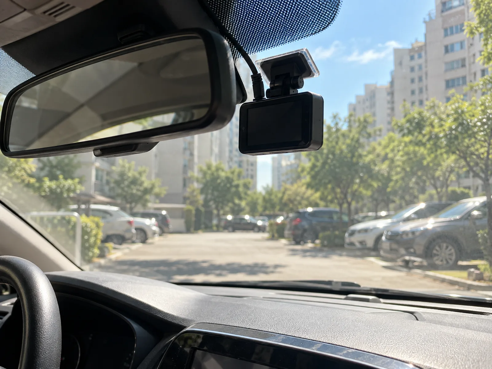
▲ 룸미러 뒤 앞유리에 블랙박스를 단 위치 예시. 한여름 주차 중 앞유리 안쪽은 열이 집중되므로 보조 전원 종류와 SD카드 내구 온도를 함께 확인하자(설명용 AI 생성 예시 이미지) ⓒ CarPrism (AI 생성 이미지)
✅ 여름 전 점검
· 제조사 사양의 동작·보관 온도 범위 확인
· SD카드도 동작 온도 범위 확인 — 삼성 PRO Endurance 마이크로SD는 공식 사양이 -40°C~85°C
· 햇빛 가림막(썬바이저 사용)·주차 방향 조정은 보조 수단일 뿐 보증이 아니다
6. 메모리 용량과 인증 SD카드 — 몇 시간 분량이 남나
블랙박스는 전체 용량이 차면 오래된 영상부터 덮어쓰는 루프 녹화를 한다. 따라서 용량 ÷ 비트레이트가 "며칠 전 영상까지 남는지"를 결정한다. 삼성전자는 PRO Endurance 마이크로SD의 최대 녹화 시간을 FHD 26Mbps(3.25MB/s) 기준으로 제시한다(32GB 모델 최대 17,520시간, 약 2년). 다만 이 수치는 카드 내구성을 기준으로 한 표기이며, 용량÷비트레이트로 계산하는 루프 녹화 가능 시간과는 다르다. 같은 26Mbps를 그대로 적용하면 32GB 카드가 한 번 가득 차는 데 걸리는 시간은 약 2.7시간(32GB ÷ 11.7GB/h)이다. 26Mbps 값을 쓰면 1시간에 약 11.7GB(3.25MB/s × 3,600초)가 쓰인다. 블랙박스 제품별 실제 비트레이트는 공식 수치를 확인하지 못해 10·16·26Mbps를 가정했다.
| 가정 비트레이트 | 시간당 용량 | 64GB | 128GB | 256GB |
|---|---|---|---|---|
| 10Mbps | 4.5GB | 약 14.2시간 | 약 28.4시간 | 약 56.9시간 |
| 16Mbps | 7.2GB | 약 8.9시간 | 약 17.8시간 | 약 35.6시간 |
| 26Mbps(삼성 기준 FHD) | 11.7GB | 약 5.5시간 | 약 10.9시간 | 약 21.9시간 |
2채널이면 전·후방이 함께 저장되므로 같은 용량에서 기록 가능 시간이 더 줄어든다(채널별 비트레이트는 확인하지 못함). 현대차 빌트인 캠 2는 64GB 기본 카드에서 주행 연속 4시간, 주차 연속 40시간을 안내하며(1세대는 주행 3시간·주차 20시간) 최대 512GB 카드를 지원한다(현대자동차그룹 보도 기준). 같은 64GB에서 주행 4시간이면 시간당 약 16GB, 즉 약 35Mbps에 해당하는 계산이다(64GB ÷ 4h, 카프리즘 계산·전·후방 합산 여부는 확인하지 못함).
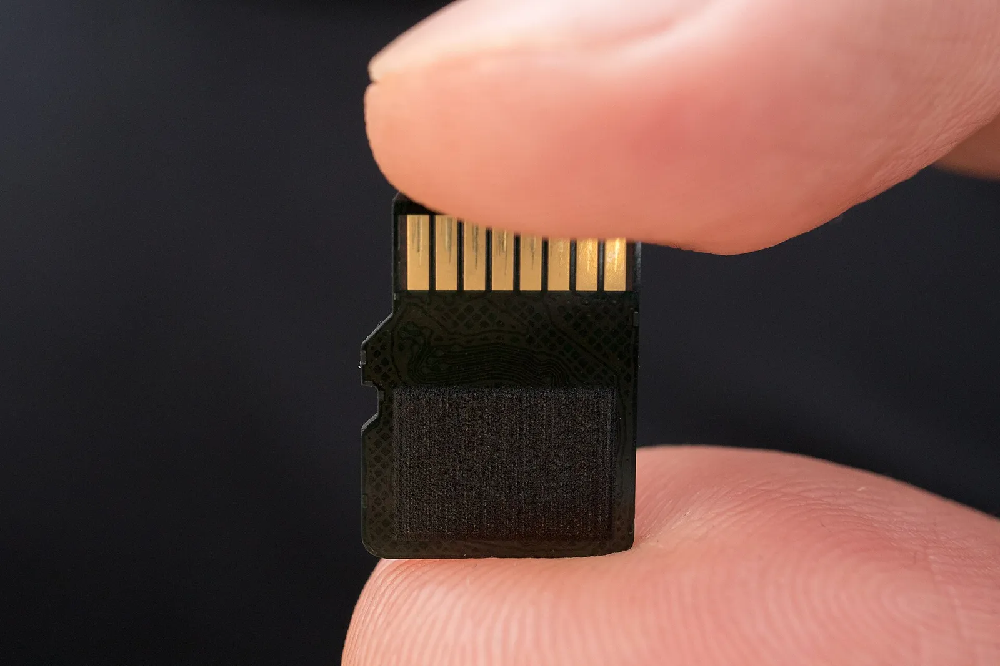
▲ 블랙박스에 꽂는 마이크로SD 카드. 연속 쓰기에 맞춘 고내구성 카드를 쓰는 편이 안전하다 ⓒ Ivan Radic / Wikimedia Commons (CC BY 2.0)
하루 녹화량으로 보면 며칠분이 남나
전·후방 2채널 합산 24Mbps(전방 16 + 후방 8, 가정값)이면 시간당 10.8GB(24Mbps × 0.45GB/h)다. 보관 일수 = 용량 ÷ (하루 녹화 시간 × 10.8GB). 주차 상시 녹화는 주행과 같은 비트레이트라고 단순 가정했으며, 충격 감지·타임랩스 방식이면 이보다 훨씬 길어진다.
| 하루 녹화 패턴 | 64GB | 128GB | 256GB |
|---|---|---|---|
| 주행 1.5시간(출퇴근) | 약 4.0일 | 약 7.9일 | 약 15.8일 |
| 주행 3시간 | 약 2.0일 | 약 4.0일 | 약 7.9일 |
| 주행 1.5시간 + 주차 상시 10시간 | 약 0.5일 | 약 1.0일 | 약 2.1일 |
주차 상시 녹화를 쓰면 128GB에서도 하루치밖에 남지 않는다는 계산이다. 사고를 뒤늦게 알아챌 수 있는 주차 사고라면 충격 감지 방식을 쓰거나 용량을 키우는 편이 낫다.
📍 "인증 SD카드"를 읽는 법
삼성 PRO Endurance는 공식 사양에서 용량별 보증기간(32GB 2년, 64GB 3년, 128·256GB 5년)과 U3·V30 등급을 밝힌다. 다만 블랙박스 제조사가 어느 카드를 "호환 인증"했는지는 제조사마다 달라 일괄 정리하지 못했다. 카드 수명과 포맷 주기는 SD카드 수명·포맷 기사를 참고.
7. 와이파이·클라우드, 그리고 설치 방식과 비용
와이파이는 휴대폰으로 영상을 옮기고 설정을 바꾸는 기능이고, 클라우드(상시 통신)는 사고·충격 알림을 원격으로 받는 기능이다. 후자는 주차 중에도 통신 모듈이 전력을 쓰므로 방전 위험과 직결된다. 현대차 설명서도 주차 중 이벤트 스마트폰 알림 기능을 쓰면 차량 배터리가 소모돼 예상 주차 녹화 시간보다 일찍 종료될 수 있다고 안내한다. 클라우드 월 이용료·약정 조건은 제품별 공식 수치를 확인하지 못했다.
설치 방식 비교
| 방식 | 특징 | 주의점 | 비용 |
|---|---|---|---|
| 자가 장착(시거잭 전원) | 시거잭 전원 케이블 연결, 상시전원 아님 | 시동 OFF 때 전원이 끊기는 차종이 많아 주차녹화 불가 | 확인하지 못함 |
| 출장 장착 | 기사 방문, 상시전원 배선 포함 가능 | 퓨즈 연결 위치·저전압 차단 설정 여부 확인 | 확인하지 못함 |
| 전문점 장착 | 차종별 배선 노하우, 사후 점검 | A/S 범위·보증 확인 | 확인하지 못함 |
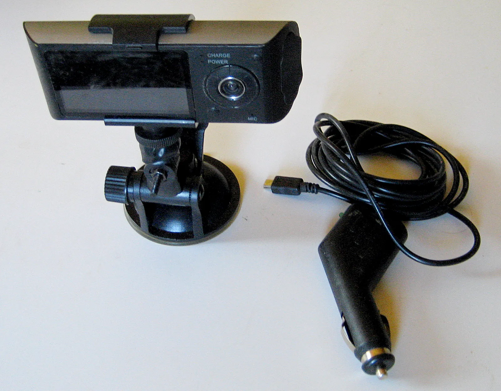
▲ 거치대와 시거잭 플러그 케이블이 한 세트인 블랙박스(촬영 제품은 국내 판매품과 무관). 시거잭 연결은 시동 OFF 때 전원이 끊기는 차종에서 주차녹화가 되지 않는다 ⓒ Schekinov Alexey Victorovich / Wikimedia Commons (CC BY-SA 4.0)
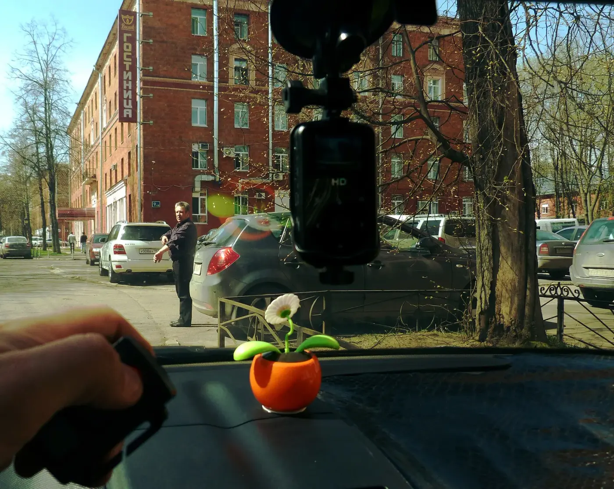
▲ 앞유리 상단 룸미러 부근에 거치한 블랙박스 예시. 운전 시야를 가리지 않는 위치에 두고 케이블은 천장·A필러 쪽으로 정리한다 ⓒ Sergey solom / Wikimedia Commons (CC BY-SA 3.0)
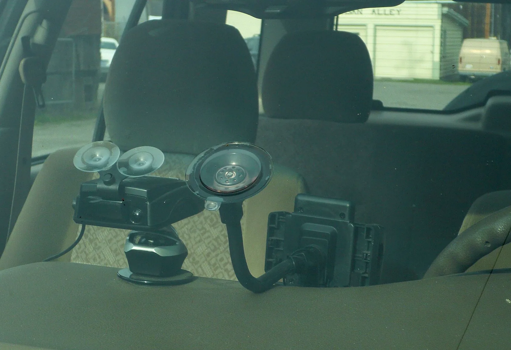
▲ 흡착식 거치대로 유리에 붙인 블랙박스를 차 밖에서 본 모습. 흡착식은 열과 진동에 약해 떨어질 수 있어 정기적으로 고정 상태를 점검한다(촬영 위치는 확정하지 않음) ⓒ Ellin Beltz / Wikimedia Commons (CC BY-SA 3.0)
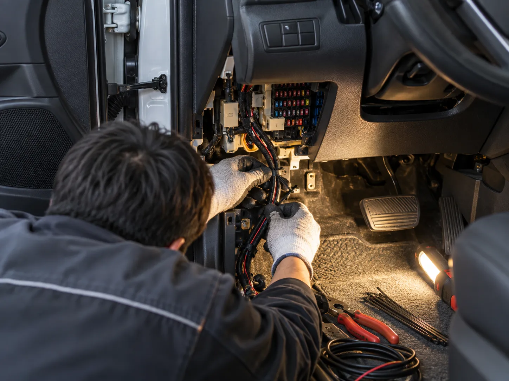
▲ 상시전원 배선은 퓨즈박스에서 전원을 따는 작업이다. 전문 장착 시 연결 위치와 저전압 차단 설정을 확인한다(설명용 AI 생성 예시 이미지) ⓒ CarPrism (AI 생성 이미지)
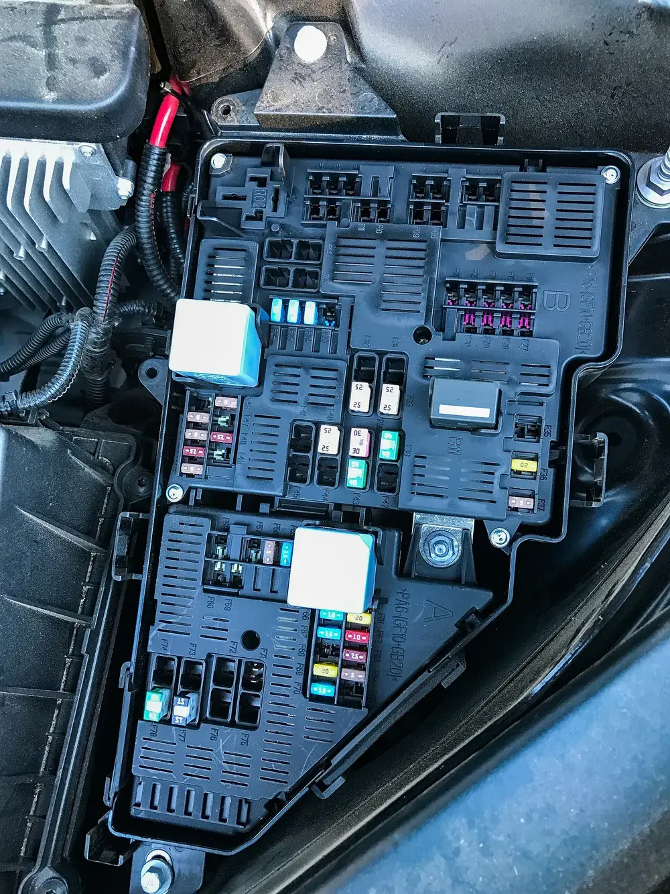
▲ 엔진룸 퓨즈박스 예시(볼보 XC90). 블랙박스 상시전원 배선은 차종별 퓨즈 위치에 맞춰 연결한다 ⓒ Tony Webster / Wikimedia Commons (CC BY 2.0)
✅ 설치 방식별 체크리스트
자가 장착(시거잭): 시동 OFF 때 시거잭 전원이 끊기는 차종인지 확인 → 끊기면 주차녹화 불가 · 케이블이 운전 시야를 가리지 않게 정리 · 후방 카메라 케이블 길이 확인
출장 장착: 상시전원 연결 퓨즈 위치 · 저전압 차단 설정값 · 후방 카메라 배선 방식을 서면(영수증)에 남기기 · 기본 포함 SD카드 용량 확인
전문점 장착: A/S 범위와 보증 기간 · 차종별 배선 경험 · 보험 특약 사진 등록 방법 안내 여부
공통: 장착 직후 전·후방 영상 샘플을 직접 재생해 번호판·화각 확인 · 이후 SD카드 포맷 주기 설정
설치 비용은 이번 조사에서 공식 수치를 확인하지 못했다. 장착 업체에 "저전압 차단 설정값, 상시전원 연결 퓨즈, 후방 카메라 배선 방식"을 물어보고 서면(영수증)에 남겨 두면 분쟁 때 도움이 된다.
8. 보험료 할인 — 확인된 범위만
삼성화재 다이렉트 안내(보험시작일 2026.4.11 기준 표기, 게시일은 확인하지 못함)에 따르면 개인 승용 기준 일반·커넥티드 블랙박스는 차량 연식과 무관하게 0.1~1.7%, 내장형은 연식에 따라 0.1~4.6% 특약 할인이 있다. 탈부착형이나 스마트폰 앱 기반 블랙박스는 대상이 아니며, 커넥티드 블랙박스는 팅크웨어(아이나비) 제품만 인정한다. 일반 블랙박스는 번호판과 장착된 블랙박스를 각 1장 촬영해 등록하고, 내장형·커넥티드는 사진 등록이 필요 없다고 안내한다.
2020년 6월 보도에서는 DB손해보험이 2년 이하 차량 2.5%·3~9년 1.4%로 나누고, KB손해보험이 12년 미만 2.8%·12년 이상 0.2%로 구분하는 등 연식별 차등이 확인된다(현재 율은 확인하지 못함).
| 할인율 | 계산 | 연 할인액 |
|---|---|---|
| 0.1% | 700,000원 × 0.001 | 700원 |
| 1.7%(일반·커넥티드 상한) | 700,000원 × 0.017 | 11,900원 |
| 4.6%(내장형 상한) | 700,000원 × 0.046 | 32,200원 |
| 차량 연식 | 할인율 | 연 할인액(70만 원 × 할인율) |
|---|---|---|
| 4년 이하 | 3.1~4.6% | 21,700~32,200원 |
| 5~11년 이하 | 1.1~2.7% | 7,700~18,900원 |
| 12년 이상 | 0.1~1.7% | 700~11,900원 |
| (참고) 일반·커넥티드, 연식 무관 | 0.1~1.7% | 700~11,900원 |
구입·장착비를 할인으로 회수하려면 몇 년이 걸리나
구입·장착 비용은 이번 조사에서 공식 수치를 확인하지 못해 15만·25만·40만 원을 가정했다. 연 보험료는 70만 원으로 두고, 회수 기간(년) = 구입·장착비 ÷ (연 보험료 × 할인율)로 계산했다. 보험료는 해마다 같다고 가정한 단순 계산이다.
| 구입·장착비 가정 | 할인 1.7%(연 11,900원) | 할인 3.1%(연 21,700원) | 할인 4.6%(연 32,200원) |
|---|---|---|---|
| 15만 원 | 약 12.6년 | 약 6.9년 | 약 4.7년 |
| 25만 원 | 약 21.0년 | 약 11.5년 | 약 7.8년 |
| 40만 원 | 약 33.6년 | 약 18.4년 | 약 12.4년 |
가장 유리한 칸(내장형·4.6%·15만 원 가정)도 5년 가까이 걸린다. 블랙박스는 보험 할인으로 값을 뽑는 물건이 아니라 사고 때 증거를 남기는 장비로 판단하는 편이 맞다. 보험료 구조 자체는 자동차보험 할증 체계 기사를 참고.
따라서 보험 할인만 보고 블랙박스를 사는 것은 효율이 낮다. 어디까지나 덤이다. 보험 특약과 갱신 점검은 자동차보험 갱신 할인 특약 기사를 참고.
9. 순정·빌트인(DVRS) vs 후장착, 그리고 전기차 12V 배터리
현대차 빌트인 캠 2(그랜저 신형 기준)는 전·후방 모두 2560×1440 QHD, 조리개 F1.6, 64GB 기본(최대 512GB), 와이파이 모듈을 갖췄고, 주차 중 전원은 주차용 리튬 배터리 모듈(P-LBM) 이중 전원 방식이라고 설명한다(현대자동차 보도). 전기차 설명서(2025년 NE1 차종)는 12V 배터리 충전량이 부족하면 고전압 배터리를 사용해 주차 녹화가 작동하도록 안내한다. 같은 설명서는 빌트인 캠 메뉴·블루링크 앱에서 12V 충전량에 따른 예상 주차 녹화 시간을 확인할 수 있고, 차량 상태에 따라 고전압 배터리를 쓸 수 없으면 설정·예상 시간보다 일찍 녹화가 종료될 수 있다고 밝힌다.
| 항목 | 빌트인 캠 | 후장착 |
|---|---|---|
| 설계 | 룸미러 뒤 전방 카메라, 후방은 후방 카메라 활용(현대차 설명) | 제품·장착 위치를 선택 |
| 전원 | 차량 전원 시스템과 연동(차종별) | 시거잭/상시전원/보조배터리 선택 |
| 보험 특약 | 삼성화재 안내상 내장형은 0.1~4.6%, 사진 등록 불필요 | 일반·커넥티드는 0.1~1.7%, 사진 등록 필요 |
| 교체·업그레이드 | 차종 사양에 종속, 확인하지 못함 | 제품 교체가 비교적 자유로움 |
⚠️ 전기차라도 12V 방전은 남는다
현대차 설명서의 12V 보조배터리 세이버+는 주행·충전 중 12V 충전량을 확인해 필요하면 고전압 배터리로 충전한다. 그러나 임의의 전기장치를 상시전원에 연결해 쓰는 경우에는 방전을 막을 수 없다고 명시한다. 노후 배터리에서는 보호가 완전하지 않을 수 있고, 작동하면 고전압 배터리 충전량이 줄 수 있다. 방전 시 대처는 배터리 점프스타트 기사를 참고.
10. 구매 전 체크표와 용도별 추천 조합
아래는 제품 추천이 아니라 "내 상황에는 어떤 사양 조합이 맞는가" 기준표다. 브랜드와 가격은 의도적으로 뺐다.
| 확인 항목 | 예 | 아니오·모름 |
|---|---|---|
| 후방 카메라 포함(2채널 이상)인가 | 후방 추돌 기록 가능 | 1채널이면 후방은 공백 |
| 번호판 식별 샘플 영상(주·야간)을 봤나 | 기록 품질 판단 가능 | 표기 해상도만 보고 고르지 말 것 |
| 센서·렌즈 F값이 사양에 기재되나 | 비교 가능 | 미기재 시 확인하지 못함으로 처리 |
| 저전압 차단 설정이 있나 | 방전 위험 완화 | 상시전원 장착 비권장 |
| 고온 동작·보관 온도 표기가 있나 | 여름 대응 판단 가능 | 표기가 없으면 확인하지 못함 |
| 고내구성 SD카드 용량 계산을 했나 | 며칠분이 남는지 판단 | 기본 포함 카드 용량 확인 |
| 보험 특약 대상 제품인가 | 할인 가능(조건 확인) | 탈부착·앱 기반은 불가(삼성화재 안내) |
| 상황 | 권장 채널·화질 | 주차녹화 방식 | 메모리 | 핵심 주의 |
|---|---|---|---|---|
| 아파트 지상 주차, 주차 접촉이 잦음 | 2채널, 전방 QHD 이상 고려 | 충격 감지 + 모션 감지 | 128GB 이상 고내구성 | 저전압 차단 설정 |
| 아파트 지하·좁은 주차장 장기 주차 | 2채널 | 충격 감지 중심(상시는 보조배터리 검토) | 128GB 이상 | 방전·고온 확인 |
| 출퇴근만 하고 주차녹화는 불필요 | 1~2채널 | 시거잭 전원 + 주행 녹화 | 64GB 이상 | 후방 공백 여부 |
| 장거리·렌터카·업무 운행 | 2~3채널(실내 필요 시) | 목적에 맞게 | 256GB 고려 | 실내 촬영 고지 기준 확인하지 못함 |
| 전기차 | 2채널 | 충격 감지 + 저전압 차단 | 128GB 이상 | 12V 방전, 순정 빌트인 사양 우선 확인 |
| 신차 구매(빌트인 선택 가능) | 빌트인 캠 사양 확인 | 차종 설명서 기준 | 기본 포함 카드 확인 | 보험 특약 대상 확인 |
✅ 마지막으로 확인할 3가지
1. 영상 제출 방법과 보관은 영상 제출 가이드로 정리
2. SD카드는 수명·포맷 가이드대로 정기 점검
3. 방전 관리는 방전 관리 기사의 저전압 차단 설정부터
11. 요약
사기 전에는 채널, 번호판 식별, 야간, 주차 전원, 메모리를 순서대로 확인하라. 후방 추돌을 대비하려면 2채널, 화질은 해상도 숫자보다 샘플 영상이다. 가로 픽셀 기준으로 FHD 대비 QHD는 1.33배, UHD는 2배(번호판 520mm·수평 화각 120° 가정, 카프리즘 계산).
주차녹화는 방식(상시·충격감지·모션·타임랩스)과 방전 위험을 함께 봐야 한다. 3W 가정에서 48시간이면 60Ah 배터리의 약 20%가 소모된다(가정값). 전기차도 임의 상시전원 연결은 12V 방전을 막지 못한다고 현대차 설명서가 밝힌다.
보험 할인은 삼성화재 안내 기준 일반·커넥티드 0.1~1.7%, 내장형 0.1~4.6%라 구매 이유의 중심은 아니다. 설치 비용, 클라우드 요금, 보험사별 현재 할인율, 실내 촬영 고지 기준은 확인하지 못했다.